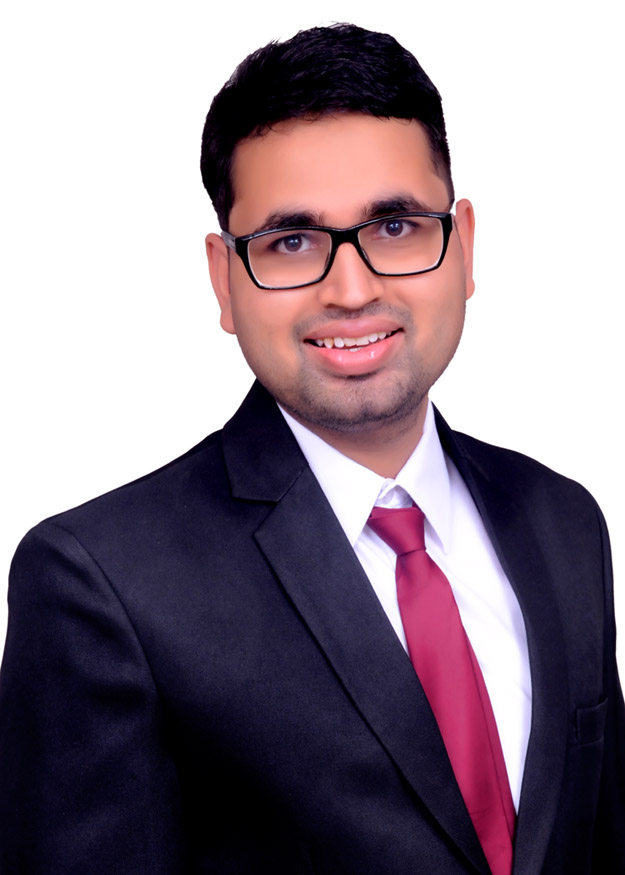

Sharma's lab is initiated for conducting clinical research in medicine. The prime focus of our network is to conduct and collaborate policy-oriented research activities across the India. Our lab advocates for evidence-based medicine that emphasizes conducting research activities that are robust and can bring about a change in patient care and healthcare policies. We aim to initiate, coordinate and conduct high-quality public health research that adds value to the evidence in the medical literature, focusing on the Low Middle-Income Countries (LMICs).

Akash Sharma is a internal medicine resident at University at Buffalo - Catholic Health System - Sisters of Charity Hospital. Akash Sharma does research in the research quality improvement,
epidemiology, cardiology, preventive cardiology. He started his research journey in third year of medical school and published many papers. He has also published the reporting guidelines for survey studies
and was the first author of that project. He has been awarded best yound investigator by Berlin Institute of Health and Paul Dudley White Award by American Hear Association. Akash Sharma collaborates with researcher, medical students, and health related persons to carry out research globally.
U Ventkatesh is working as an Assistant Professor in the Department of Community Medicine & Family Medicine at All India Institute of Medical Sciences (AIIMS), Gorakhpur.
He has been identified as a National trainer in Induction Module for Community Health Officers to deliver Comprehensive Primary Health Care at Health & Wellness Centres under Ayushman Bharat.
He also does External consultancy with the National Health System Resource Centre (NHSRC), MoHFW, Government of India. In 2017, he received the prestigious "Indian Association of Preventive & Social Medicine (IAPSM) Presidential award".